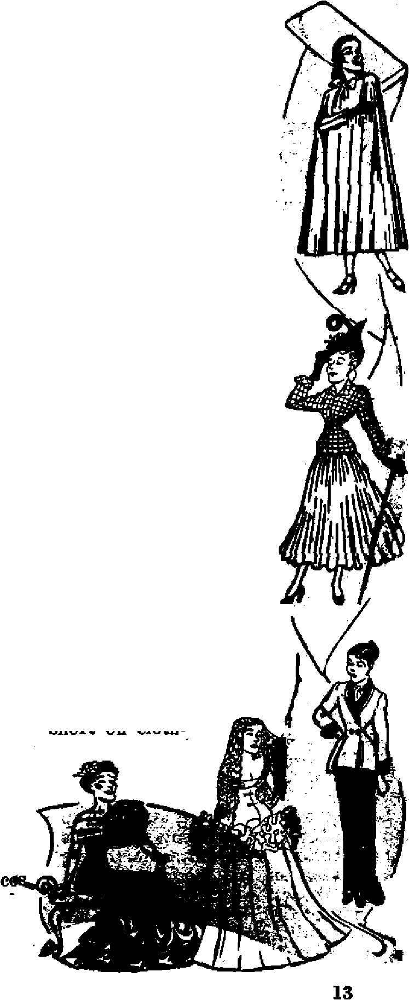

Christendom Pagan Foundations "Christian” religion proved a stranger to Bible truth
A heathen celebration, and not the birthday of Christ
What the "new look** will cost in dollars and comfort
Its history crystallized
DECEMBER 22, 1947 semimonthly
THE MISSION OF THIS JOURNAL
News sources that are able to keep you awake to the vital lanUtf of our times must be unfettered by censorship and eelflah Interests. “Awake I’* has no fetters. It recognizes facts, faces facts, is free to publish facts. It is not bound by political ambitions or obligations; it is unhampered by advertisers whose toes must not be trodden on; it !s unprejudiced by traditional creeds. This journal beeps itself free that It may speak freely to you. But it does not abuse its freedom. It maintains integrity to truth.
“Awake I” uses the regular news channels, but is not dependent on them. Its own correspondents are on all continents, In scores of nations. From the four corners of the earth their uncen sored, on-'the-scenes reports come to you through these column^. This journal’s viewpoint is not narrow, but is international. It is read in many nations, in many languages, By persons of all ages. Through its pages many fields of knowledge pass in review—government, commerce, religion, history, geography, science, social conditions, natural wonders—why; its cover* age is as broad hs the earth and as high as the heavens.
“Awake I” pledges itself to righteous principles, to exposing hidden foes and subtle dangers, to championing freedom for all, to comforting mourners and strengthening those disheartened by the failures of a delinquent world, reflecting sure hope for the establishment of a right* ecus New World,
Get acquainted with *'Awake!” Keep awake by reading “Awake I”
Published Semimonthly By WATCHTOWER BIBLE AND TRACT SOCIETY, INC.
117 Adams Street Brooklyn L N. T., U. 8. A
N. H. Knohb, PreMent Geakt Suiteh, Secretpry
Fivo cent® a copy One dollar a year
Remfttantti should be MQt to office £z> Four country compliance with regulations to cturantee safe delivery of money. Benrittantes are accepted at Brooblyii from countries where no office Is located, by International money order only. Subscription rates In different coruitrieB are here stated In local currency.
Ratio aacpIntlDH (irtth renml b|ank) te mn at leaet two Jesus before suteaiplku expires.
Chtuw idditw vbeu sent te our office tW be expected tfecUo trithin one month. Bend Four old as well aa new addme.
Offices Yearly Bubecription Rate
Aeierlo, 0.1,117 Adams BL, Brooklyn 1, N.Y. 11 Autrella, 7 Beresford Bd., Btrethfleld, N.S.W, Be CUeda. 40 Irwin At*., Toronto 5, Ontario |L EnpliM, 04 Craven Terrace, London, W. 2 Be Sesth Africa, 623 Boston House, Cape Town Bs
Briand ae mtltf at Brooklyn, N. Tt, Ad of Marti) 3, 18 T9. Printed In 0. AA
CONTENTS
Christendom's Pagan Foundations
Christianity Becomes Paganized
Building the Catholic Structure
Hierarchy Boasts of Pagan Foundation 7
Gregorian Calendar
Comics and Radio a Boon to Delinquency “Thy Word Is Truth”
Time of Birth of “The Son of David” The African Silkworm
Watching the World
Jgg
®^Now it is high time to awake.Romans 13:119J
Volume XXVIII Brooklyn, N.Y., Doctmta* £2, 1X7 Number
Christendom’s Pagan Foundations
BEHOLD the ramshackle, rickety old house of religious Christendom!
What an astonishing mixture of confusion in architecture and design, what a conglomeration of building materials, what a rambling monstrosity, this manyroomed mansion of psendo-Christianity I From its uppermost cornices to its very foundations it is a fabulous mockery, a monstrous fraud, a magnificent structure of deception, that is plastered and smeared over with a form of godliness, bnt, in truth and in fact, is a heathenish fabrication throughout It is indeed a house divided against itself, a honse made of hay, wood and stubble, a house founded on the ancient and shifting sands of paganism, having as its notorious designer and engineer none other than the Devil himself.
For a closer examination of this tottering house of religion begin at the foundation, and you will be amazed, even shocked, to discover that practically aU of Christendom’s teachings and practices have a purely pagan origin. Go back two thousand years to the time Home was expanding its power and influence throughout the earth, concerning which expan-sion-the Encyclopedia Americana says: Naturdlly as the Boman Empire broadened and became more cosmopolitan, its religions system also became broader and more all-embracing. Having absorbed the deities of the Italic Peninsula, the habit of absorption became, with Rome, all-impelling, and the pantheon of tbe Imperial City, reaching out DECEMBER 22, 1S&7
its octopus arms in every direction throughout the already wide confines of the rapidly extending Roman domain, and even beyond it, brought new creeds, new deities and new religious philosophies into Rome.
Boma was as the Latin historian Tacitus (born in Nero's day) describes it: “the common sink into which everything infamous and abominable flows like a torrent from all quarters of the world." The philosophies of the Epicureans, the Stoics, the Cynics and the Pythagoreans ran rife. Pagan gods, rites and mysteries together with their priesthoods were myriad in number. “Thus Rome, bathed in philosophy, scepticism, mysticism, emotionalism and stoicism, with nothing solid to which to anchor, drifted npon the rocks of national religious shipwreck. In this condition she was found . . . for the development of the Catholic faith.”—Encyclopedia Americana,
It was with the goal in mind of avoiding "national religious shipwreck” that several of Rome's emperors attempted to solidify and amalgamate the diversified forms of demon-worship by melting them together to form a fission religion. During the winter of A.D. 302 Diocletian and Galerius, two of the four rulers of the Roman Empire at that time, were in a secret huddle. Says Edward Gibbon, in his Decline and Fall of the Roman Empire, "the fate of Christianity became the object of their secret consultations.” The outcome of this series of meetings was the issuing, A.D. 303, of an edict which was designed to establish uniformity of worship, and immediately paganism attempted to swallow up the so-called "Christians”. Other edicts fob lowed and the flames of persecution by the pagans increased, until, A.D., 311, shdrtly before his death, Galerius, seeing that all their efforts to establish a single state religion by persecution had failed, issued his famous- edict of pacification.
After the death of Galerius, Maximin experimented further in an effort to effect a single “state religion”. Quoting again from Gibbon;
In all the great cities of the empire, the {pagan] temples were repaired and beautified by the order'of Maximin, and the officiating priests of the various deities were subjected to the authority of a superior pontiff destined to oppose the bishop, and to promote the cause of paganism. These pontiffs acknowledged, in their turn, the supreme jurisdiction of the metropolitans or high priests of the province, who acted as the immediate vicegerents of the emperor himself* A white robe was the ensign of their dignity*
Though this pagan institution did not succeed, due to persecution of its opponents, yet it laid the pattern and foundation for the Catholic Hierarchy that was set up a few years later. Its “temples”, "priests” “pontiffs,” “bishop” “high priests,” “vicegerents,” and “white robe”, were all transferred over to Catholicism. The credit (or rather discredit) goes to Constantine for the successful welding together of the two factions. A.D. 325 Constantine accomplished by compromise what Diocletian, Galerius, Licinius and Maximin failed to do by force.
Compromise, the magic word that so completely describes Constantine's technique / as a builder of Christendom's house of religion I When he saw that the so-called “Christian” religion could not be suppressed beneath paganism he was shrewd enough to reverse the order and place paganism beneath apostate “Christianity” as the foundation for his “state religion”. To do this he merely had to take the rites and practices of the pagans, “sanctify” them with a superficial finish of “Christianity'5, and they became the building blocks in his new structure. The so-called “Christians” consented because the thing was called Christian, and the pagans were agreeable because they could continue their old rituals and ceremonies under a new guise. It should be noted, however, that Constantine ditj not unite and fuse true Christia nity with paganism, but rather he welded to paganism a degenerate^ apostate religion tiiat Was called “Christian”, and which in fact was already tainted with pagan doctrines.
Christianity Becomes Paganized
Mosheim, the noted, historian, in his Institutes of Ecclesiastical History, gives a hrief description of the ancient pagan religions.
The greater part of the gods of all nations were ancient heroes; famous for their achievements and their worthy deeds; such as kings, generals, and founders of cities* ... To these, some added the more splendid and useful objects in the natural world, among which the sun, moon, and stars, being pre-eminent, received worship from nearly all; and some were not ashamed to pay divine honours to mountains, rivers, trees, the earth, the ocean, tbe winds, and even to diseases, to virtues and vices, and to almost every conceivable object —or at least, to the deities supposed to preside over these objects.
The worship of these deities consisted in numerous ceremonies, with sacrifices, offerings, and prayers* The ceremonies were for the most part absurd and ridiculous, and throughout debasing, obscene, and cruel. * , * Over this whole worship presided pontiffs, priests, and servants of the gods, diyideti into many classes, and whose business it was to see that the rites were duly performed. ~ .
Besides this common worship to which all had free access, there were among both orientals and Greeks certain recondite and concealed rites, called mysteries, to which very few were admitted*
Little wonder that the apostle Paul, a true and diligent follower of Christ, Stood up among the Greeks in the Areopagus A.D. 50 and declared: “Athenians, I perceive that in all things you are extremely devoted to the worship of demons.” (Acts 17:22, Diaglolt) But during the next two hundred years after Paul’s* day ‘grievous wolves entered in’ and corrupted true Christians with their pagan doctrines and vain philosophies. (Acts 20: 29) Says Mosheim: “At the head of this class was Origen [early church “father”, A.D. 185-254], who, being fascinated with the Platonic philosophy [Plato’s foolish idea about immortality of the soul], ventured to apply its laws to every part of religion.” James Murdock, eminent Bible scholar, says that Origen "reasoned according to the reigning philosophy of the age and country in which he lived. He therefore believed in the pre-existence of human souls, and their incarceration in bodies for offenses previously committed”; ideas that were wholly pagan in origin. The historian, Philip Schaff, says that Synesius, bishop of Cyrene and pupil of the female philosopher Hypatia, “fuses” in his hymns the "doctrine of the trinity with the Platonic idea of God, and the Saviour with the divine Helios”, the Egyptian sun god. Thus, pne pagan corruption after another crept in, until by the fourth century, Mosheim tells us, . . . we see on every side evident traces of excessive veneration for departed saints, of a purifying fire for souls when separated from the body, of the celibacy of the clergy, of the worship of images and relics, and of many other opinions, which in process of time almost banished the true religioh. or-at least very much obscured and corrupted it..Genuine piety was supplanted by a long train- of superstitious observances. . . .
There was of course little difference in these Ijmes between the public worship of the Chilians and that of the Greeks and Ilo-mans. In- both alike there were splendid robes, mitres, tiaras, wax-tapers, croziere, prbc^s-DECEMBER tt, 1947
sons, lustrations, images, golden and ailvw vases, and innumerable other things.
AU the paraphernalia, trinkets and gaudy pageantry as well as the doctrines were stolen from the pagans. The bishop’s staff or crozier is an exact copy of the lituus or ensign of the ancient Augurs, according to Cicero. {De Divinations, lib. i. cap. xvii) Also "much of the politics of Catholicism”, says Will Durant in his Story of Philosophy, “was derived from Plato’s /royal lies*, dr influenced by them; the ideas of heaven, purgatory, and hell, in their medieval form, are traceable to the last book of the Republic.” Exclaims John Marsh in An Epitome of General Ecclesiastical History, “What ■ deplorable degeneracy from the simple worship of the Apostles I”
Building the Catholic Structure
With such a pagan foundation laid down Constantine found it rather easy to build up the rest of the Catholic church. He did a good job, too; for aside from a few alterations and additions, and a coat of whitewash from time to time, nothing has been changed in the framework of this pagan edifice in the last 1,600 years. As to builder Constantine himself:
In his relation to Christianity he was cool, calculating, always bent upon the practically useful, always regarding the practically possible. . . . His conversion was a change of policy, rather than of moral character. Long after that event [his supposed vision of the tfcro®” which has been said to mark his conversion to Christianity] he killed his son, his secfind wife, several other of his relatives, and some of his most intiftate friends.—A Religious Encyclopedia, edited by Philip Schaff, 1894.
This was the son of the Devil, the pagan, that set himself up as the "master builder” and Pontifex Maximus, a title since held by the popes of Rome. There is no need for surprise over this, for, after all, he lived flt a time when, to quote the historian Gibbon, *the various modes of worship, which prevailed in the Roman world, were all considered by' the people as equally true; by the philosopher as equally false; and by the magistrate as equally useful?* Constantine was the latter-
After Constantine got the walls up the finishers and decorators came along. In his Church History Dean Waddington says (page 118): "The copions transfusion of heathen ceremonies into Christian worship, which had taken place before the end of the fourth century/had, to a certain extent, paganized (if We may so express it) the outward form and aspect of religion?’ In the next century the pseudo-Dionysian writings about mystic theology and an ecclesiastical hierarchy appeared, concerning which the History of the Christian Church, vol- 3, page, 604, says:
This idea is a remnant of the aristocratic spirit of ancient heathenism, and forms the connecting link with the hierarchial organization of the church, and explains the great importance and popularity which the pseudo-Dionysian system acquired, especially in the mystic theology of the middle ages. [Italic® added]
See also other authorities, as Engelhardt, Ritter, Baur, Huber and Vogt In the seventh century came Pope Boniface, who (according to John Dowling in his introduction to Middleton s Letter from Rome) "not only adopted all the pagan ceremonies that had previously, in various places, been incorporated into Christian worship, but .speedily issued his sovereign decrees, enjoining uniformity of worship, and thus rendered these heathen rites binding upon all who were desirous of continuing in fellowship with the Romish church. . . . Thus incorporated, they became a constituent element of the anti-Christian Apostasy, and have so continued from that time till the present”.
Some think it strange that Catholicism of the West should be so similar to Buddhism of the East. But research discloses that both had a common origin in the paganism of tbe Indo-European race. Van Dyke calls attention to the remarkable resemblance between this Eastern heathenism and Western paganism in his book Popery,
That Romanism is indeed the twin sister of the Buddhist religion none surely caA deny, A comparison of the two will force conviction upon even the most incredulous. . . . Buddhism has ever had, and now has, precisely those features which mark the Papal Church. . . . The worshippers of Buddha in Burma, Siam, and the Chinese Empire . . . have their relics and their images, the objects of supreme veneration j their temples costing fabulous sums of money; their saints canonized by ecclesiastical authority; their priests with shaven heads, vowing chastity, poverty and obedience; their wax candles burning night and day; their penances and self-inflicted tortures; their endless traditions, and hair-splitting moral distinctions; and even their confessional. They have also their Lent, when for four or five weeks all the people are supposed to live on vegetables and fruits; their acts of merit, repetition of prayers, fasting, offerings to the images, celibacy, voluntary poverty, enforced devotions, and munificent gifts to temples, monasteries and iddls. Even the rosary; a string of beads used in saying prayers, -and supposed by Papists to be a device specially revealed to St. Dominic, is*part of the sacred machinery of the devout Buddhist.
When it chme time for the Roman Catholic Hierarchy to expand its domain in the direction of the British Isles the “infallible” pope Gregory the Great, like his predecessor Constantine, sent Austin the monk to Britain with the following instructions:
Whereas it is a custom among the Saxons, to slay abundance of oxen, and sacrifice them to the devil, you must not abolish that custom, hut appoint a new festival Ip be kept, either on the day of the consecration of the churches,
or of the birthday of the saints where relies are deposited there, and on these days the Sittons may be allowed to make arbors round the [pagan] temples changed into churches, to kill their oxen, and to feast, as they did while they were still pagans, only they shall offer their thanks and praises, not to the devil, but to God. [Italics added]
"Thus was the religion of the Saxons,” says Dowling, “bo disfigured and corrupted with all the superstitions of paganism, at its first.being planted among them, that it scarce deserved the name of Christianity, hut was rather a mixture if Christianity and paganism, or Chris-iauity and paganism molded, as it were, into a third religion.” To this agrees the worthy testimony of Dr. Conyers Mid-Heton, who was one time principal librarian at Cambridge University. Hav-ng access to historical records, and after itudying and carrying on research work in Home itself, he published a book in L729 entitled Letter from Rome, Show-rig an Exact Conformity Between Pop-
iwid Paganism. After showing a defiled similarity between paganism and Catholicism Middleton concludes that there is "an exact conformity, or ma-formity, rather, of worship, between Popery and Paganism; for since, as I have shown above, we' see the present people of Borne worshiping iu the same temples,, at the same altars, sometimes the same images, and always with the same ceremonies, as the old Romana,0 Again this authority declares:
All their ceremonies appear plainly to have been copied from the rituals of primitive Paganism ; as if handed down by an uninterrupted succession from the priests oi old, to the priests of new Rome. . . . How vain ah attempt it must be to justify by the principles ot-JChriStianity a worship formed upon the and after the very pattern of pure enisml
Hierarcng Boasts of Pagan Foundation
Nevarieless, papal apologists have not hesitated in attempting to justify
st, 1047 this adoption and imitation of pagan hand-me-downs. In his account of subterraneous Rome (Vid. Aring. Rom. Subter. Tom. i. L. i. c. 21) Aringhus makes this defense of the popes "who found it necessary in the conversion of the Gentiles, to dissemble and wifik at many things, and yield to the times; and not to use force against customs, which the people were so obstinately fond of; nor to think of extirpating at once every thing that had the appearance of profane’’. But in openly confessing that Catholicism is in reality founded on demon-worship and paganism none have been more frank than the eminent prince of the Catholic Church, Cardinal Newman. In his book Essay on the Development of Christian Doctrine, published in 1878, “His Eminence” lets his hair down and tells all:
Confiding then in the power of Christianity to resist the infection of evil, and to transmute the very instruments and appendages of DEMON-WOESHIP to an evangelical use, and feeling also that these usages had originally come fronj primitive revelations and from the instinct of nature, though they had been corrupted; and that they must invent what they needed, if they did not use what they found; and that they were moreover possessed of the very archetypes, of which paganism attempted the shadows; the rulers of the [Roman Catholic] church from early times were prepared, should the occasion arise, to adopt, or imitate,' or sanction the existing rites and customs of the populace, as well as the philosophy of the educated class. [Italics added]
Then the cardinal and official spokesman makes this admission as to Catholicism’s demonic and pagan origin (and let all honest Catholics and others read it with great care) :
The use of temples, and these dedicated to particular saints, and ornamented on occasions with branches uf trees; utoanse, latapa, and candles; votive offerings on recovery from illness; holy water; asylums; holydays and seasons, use of calendars, processions, blesa-
7
ings on the fields; sacerdotal vestments, the tonsure, the ring in marriage, turning to the East, images at a later date, perhaps the ecclesiastical chant, and the [song] Kyrie Eleison, are all of pagan origin, and sanctified by their adoption into the Church.
Pages 355, 371, 373, Edition of 1881.
And that more demonism and paganism is to be “sanctified” by adoption into the Catholic Church in the future, we read from Catholic authority Prdfessor Karl Adam’s The Spirit of Catholicism:
We Catholics acknowledge readily, without any shame, nay with pride, that Catholicism cannot be identified simply and wholly with primitive Christianity, nor even with the gospel of Christ. . . . And we go further and say that thousands of years hence Catholicism will probably be even richer, more luxuriant, more manifold in dogma, morals, lflW and worship, than the Catholicism of the present day. A religious historian of the fifth millennium A.D. will without difficulty discover in Catholicism conceptions and forms and practices which will derive from India, China and Japan, and he will have to recognize a far more obvious “complex of opposites”. It is quite true, Catholicism is a union of contraries.
Arrogant Catholics may brag about their paganism and justify it, and. in blindness think they will continue to “enrich” their ritual with ever more paganism. Less blindness would let them see how contrary their position is with the inspired Bible: “Be ye not unequally yoked together with unbelievers . . . What part hath he that believeth with an infidel! And what agreement hath the temple of God with idols!” (2 Corinthians 6:14-17) Even the public press tells us that Catholicism’s adored St. Peter’s Cathedral in Rome is a religious temple of paganism and demonism. The American Weekly, April 13, 1947, stated: “Workmen recently came upon one of the most surprising discoveries of our time while lowering the floor of the crypt of the great Cathedral of St. Peter in Rome, to’ provide more burial space for popes and royal personages.” Continuing, the article tells that “pagan idols beneath •Si. Peter’s” were found;.also “the graceful figure of Dionysus, god of the wine harvest [who was worshiped with drunken revelry in the diabolical phallic worship of sex], accompanied by a satyr and a fawn decorates one of the old pagan tombs found underneath St. Peter’s.” Thus it is seen that doctrinally, ecclesiastically, spiritually and literally Catholicism is built upon a foundation of paganism.
In the sixteenth century certain men protested and decided to “reform” this monstrous structure of paganism. Some reformers thought -a slight remodeling . job was sufficient, so they knocked off a cornice and chimney or two, swept out some of the vermin and cobwebs, moved in some new doctrinal fixtures, and began to carry on bpsiness as usual. In other quarters large numbers of demolition crews wrecked great sections of the house. But while doing so they built new organizations alongside the old on practically the same foundation of paganism.
As a result, today we have a religions honse divided against itself, partly the original structure of Catholicism covered over with hoary antiquity, and partly the more recent structure of Protestantism with as many rooms, annexes and closets as there are sects, dach having its-own peculiar design. All together, the whole religious institution of Christendom is built on the same sandy foundation of paganism, and not .the rock foundation of Bible truth. Its builders are like the “foolish man, which built his house upon-the sand: and the rain descended, and .the floods came, and the winds blew, and beat upon that house; and it fell: and great was the fall of it”. (Matthew 7:26,27) Yes, great will be the fall when Christendom topples to destruction during the storm of Armageddon, the battle of the great day of Jehovah God.—Revelation 16:16.
Khrtrtsretf Routed
SHOCKING as it may sound, Christendom’s most sacred festival of the year is rooted in the very fertile soil of paganism. Of course, this is startling news, for on the surface everything connected with Christmas apparently seems devoted to a worship and honor of God and HistChrist. But roots lie below the surface, and hence it is necessary to hreak through the outer crust, hardened by the centuries of time, to uncover them. Dig around the customs, practices and activities connected with the celebration of Christmas and you will be amazed to discover that almost all of them are offshoots that have‘sprung from devilish pagan religions far more ancient than is Christianity.
The deceitful topsoil is so thin the honest investigator quickly discovers, with little effort, that December 25 is not in commemoration of Jesus’ birthday, for He was not born in the wintertime. (See page 25 of this issue.) Says the Catholic Encyclopedia: “Christmas was not among the earliest festivals of the Church. Irenaeus and Tertullian omit it from their lists of feasts.” Augustine shows that the celebration was not derived from apostolic usage, nor was it sanctioned by any early council. Where, then, did Christmas originate! and what dpes it celebrate!
The Catholic historian, Bail-let, says (Vies des Saints, tom, iii. p. 290); “There can be no reasonable doubt that it had its rise after the council of Nice [A.D. 325].” It was Julian I, bishop of Rome A.D. 337-352, DECEMBER
who first fixed the celebration on December 25, according to the archbishop of Nice, John, and an anonymous writer cited by Cotelerius. James Murdock, the well-known Biblical and historical authority, further enlightens us:
Some among the Catholies (as Harduin), and many among the Protestants (as Hospinian, Jablonski, Eisinschmid, Gieae-ler, &c.),, think that day was chosen-first, because it was the day on which the Romans celebrated their festival of natalis solis invicti {‘Birthday of the Unconquercd Sun’], or of the 'sun’s passing the southern solstice and beginning to return northward —a fit emblem of the approach of the Sun of Righteousness to mortals and, secondly, because the establishment of a Christian festival of several days, at that season of the year, might supplant the Saturnalia and other corrupting festivals of the pagans. ... The Christmas holidays ■. , hate borne so close a resemblance to the Roman Saturnalia, SigiUaria, &c. and to the Juel [Yule] feast of the ancient Goths, as to afford strong presumption of an unhappy alliance between them from the first.
Confronted with such an array of testimony the Catholic Encyclopedia is forced to admit : “The well-known solar feast, however, of Natalis Invicti [(Birthday, of the Unconquered’], celebrated on 25 De-dfember, bas a strong claim on the responsibility for our December [Christmas] date,” By digging deeper into the origin and doings of the Roman Saturnalia and the “birthday of the Unconquered” rank paganism is uncovered.
Like the Egyptians, the Romans were sun-worshipers. Their December feast of the Saturnalia corresponded to sini-ilar feasts held at the same time of year by the Scandinavians, Anglo-Saxons, Celts, and those of the Druid religions. All these festivals were in celebration of the sun’s return, and all such feasts had a common origin in the Euphrates river valley whence migrated the different tribes and languages following the confusion of tongues at the tower of Babel in Nimrod’s day. Following Nimrod’s death the pedple, being devil-worshipers, deified him as god. They worshiped the never-dying sun as a personification of Nimrod’s “divinity", and each year at the winter solstice, or the shortest day of the year, they held a great religious festival irf honor of the “re-born” Sun. It was the 'birthday of the Uncon-quered’. This worship of the sun was really a worship of the Devil, and all pagan devil-worshipers thereafter, including Asiatics, Egyptians, Europeans and North American Indians, had their sun rites. When the fusion of paganism and apostate Christianity took place in the fourth century (see preceding article) the Devil’s Saturnalia feast was brought over and transformed into a so-' called “mass of Christ”, Christmas.
In doing this, the Eastern churches of the Syrians and Armenians, says the Encyclopaedia Britannica, “accused the. [so-called “Christian"] Bomans of sun-worship and idolatry,” and rightly bo. But the clergy today take a position similar to that expressed by “Bev.” James M. Gillis, C.S.P., editor of the Catholic World, when he said: “It is a well-known fact that popes and councils in the early Church deliberately placed a Christian festival on or near the day of a previously existing pagan carnival, with the purpose of ousting the heathenish and generally licentious celebration," But frankly, did the Catholic church, or, for that matter, any of the other churches that have since celebrated Christmas, oust “(he heathenish and generally licentious celebration” of the pagans? No, not, at all. Instead of ousting these customs Christendom has adopted them-as part of her own conglomerate system. Says Hislop’s The Two Babylons, page 97:
The wassailling bowl of Christmas had its precise counterpart in the “Drunken festival” of Babylon; and many of the other observances still kept up among ourselves at Christmas came from the very same quarter. The candles, in some parts of England [and America], lighted on Cbristmas-eve, and used ao long as the festive season lasts, were equally lighted by the Pagans on the eve of the festival of Babylonian god, to do honour to him. . . . The Christmas tree, now so common among us, was equally common in Pagan Home and Pagan Egypt. In Egypt that tree was the palm-tree; in Home it was the fir. —Berlin Correspondent of London Times, December 23, 1853.
Yes, and all the other shenanigans and foolery of Christmastime are of pagan origin. To quote from James Murdock’s footnote in his translation of Mosheim’s Institutes of Ecclesiastical History: "From the first institution of this [Chris-mas] festival the Western nations seem to have transferred to it many of the follies and censurable practices which pre-yaijed in the pagan festivals of the same season,* such as adorning the churches fantastically, mingling puppet shows and dramas with worship, universal feasting and merry-making, visits and salutations, presents and jocularity, revelry and drunkenness.”
One of the most absurd and ridiculous of these Christmas customs that were stolen from the pagans was called the “Feast of Fools’”, concerning which the Encyclopedia Americana says:
Among the heathen festivals, which the Christians could not easily abolish were the Spturnalia, which, in the confusion of all distinctions of ranks, and in extravagance of merriment, exceeded the gayest carnivals, tike f«wt of fools, among Christians, wm an imitation of the Saturnalia, and, like this, was celebrated in December. [This feast consisted of "consecrating” a fool to act as a bishop, who in turn celebrated mass and blessed the people.] , . . Spring this time the rest of the performers, dressed in different kinds of masks and disguises, engaged in indecent songs and dances, and practiced all possible Tollies in the church. Except from their association w#h the Saturnalia nothing is known of the origin of these extravagancies, which appear to have been very ancient
Such foolery was practiced in Catholic churches throughout Germany, England and Scotland down to the Reformation, and in France they continued as late as the eighteenth century. Giving a few more details on this devil-honoring fool’s feast held on Christmas the Encyclopaedia Britannica relates:
A mock mass was begun, during which the lections were read cum farria, obscene Songs were sung and dances performed, cakes and sausages eaten at the altar, and cards and dice played upon it. . . . [Sometimes an ass was led to the church sanctuary and] mass was then sung; but instead of the ordinary responses to the Introit, Kyrie, Gloria, etc., the congregation chanted "Hinham” (Hee-haw) threte times. The rubric of the mass for this feast actually runs: ... (At the close of the mass the priest, turning to the people, instead of saying, He musa est,.shall bray; the people, instead of Deo grptias, shall thrice respond Hee-haw, Hee-haw, Hee-haw.)
In those days the clergy were braying like jackasses. And they haven’t stopped since! After receiving this base humiliation inside the church the poor ass was led out to the church square, where it "became -the centre of burlesque ceremonies, dancing and buffoonery being carried on far into the night”. Even today the Hierarchy does not frown upon such ludicrous paganism as shown in the following excerpts from a letter of a GI stationed on Yap island which was published in The Metaline Falls News, February 15, 1945:
The most important part of the [Christmas] holiday to the natives was Midnight mass. They are all devout Catholics. . . . After the mass was over, the natives returned to their huts and changed into native costumes. Then they hit into an all-night revelry of pagan dances. Consistent, aren’t theyt Tha dances were very interesting to watch. . . , The Yap island war dances especially were very sexy and ritualistic. . . . Jn the morning the natives went to mass in their own chapel,
Christendom truly is founded, on heathenism, and her Christmas in origin, design and purpose is grounded in the high jinks of paganism. She has her decorated trees, her wax candles and. her yuletide logs; she has her holly, mistletoe and her “St. Nick” called Santa Claus; she lays great stress on-the giving of gifts; She is wanton in excess and gluttony, with-feasting, drinking and licentious orgies carried beyond measure. Instead of being anchored in the Bible, Christmas is securely rooted in a heap of decayed pagan practices, and hence the whole thing is a stench in the nostrils of true Christians.
Singeing .Santa’s Whiskers
C. At Christmas time last year a Pueblo, Colorado, school brought in thrir “Santa Claus”, who proceeded to aak each child-jvhat it. wanted. Coming kround to seven-year-old Billy he asked him if he believed'infanta. “No,” said Billy. "Oh, you don’t* And why not J” inquired the much-surprised make-believe. Answered Billy, "The Bible teaches not'to tell lies in God’s name. You can’t do all yon daim. If you travel all over the world why do some little boys get so many nice toys and other boys don’t get snyf Why do same imre bread and others go hungryf” Before thig hbutt
S£, 1W , .
Fashion t what a world of mystery that word opens up! What a dangerous subject to probe! What dark corridors, what deep intrigue, what subtle hypocrisy, what riotous foolishness, what gems of comedy, are stumbled over, uncovered and brought to lifjht by the stout-hearted explorer! And it is b!1 iu the feminine world of fashion, some beneath the surface, some open and tangible, and some so lofty and celestial that it lies in the realm of speculation beyond the reach of man.
More than half thte world’s population is fashion-conscious, with a goodly portion fashion-crazy, a form of insanity that has reached epidemic proportions in recent months. To the uninformed this might appear as a comparatively new disease, but history shows that this strain of virus is of ancient origin. Modern fashions as we know them seem to date back to the thirteenth and fourteenth centuries of our common era. It was then that the wasp-like waist of the lady folks was admired. Says Calthrop’s history of English costumes-: “Not that the lacing was very tight, but it commenced the habit, and the habit begat the harm, and the thing grew until it arrived finally at the buckram, square-built, cardboard and tissue figure which titters and totters through the Elizabethan era.”
Since those days fashionshave gone up and down in their revealments at both the top and bottom of the gannents. During the Renaissance the "hour-glass” cornet gave the ladies so much ‘flift” it almost pushed their breasts-out of the low square-cut dresses. This phenomenon again appeared toward the close of the
yffafae, tAe ‘Wawati?
eighteenth century, a time when a critic remarked; “What delicate mind can view with unconcern the nudes we meet everywhere? The arm, once covered, is now bared nearly to the shoulder, the bosom shamefully exposed, and far more the ankle?’ During the prudish nineteenth century fashion swung to the other extreme by raising the neckline to the choking poini and giving women that ponderous, unapproachable, stay-your-distance look- It was an age of “upholstery” when women were first compressed in the ferocious grip of whalebone corsets, and then were padded up with bulges of crinoline together with three or more petticoats. After the day of hoops, bunched skirts and Puritan severity, “improvers” and saucy built-in collapsible bustles had their seductive influence.
Though a gradual reduction in the number and size of fdmale garments began in 1856, women in the “gay 90’s” still wore seventeen pounds of clothing about the house. Emancipation ’from much of fashion’s burden came after World War I, when dresseb rose from 7 inches above the ground to 20 inches in 1920, and in 1927 jumped above the knees. Corsets were thrown away and undies were limited to scanty panties, brief bras and sheer slips. In 1922 the able' Mr. Dennis Bradley, in defending this new freedom in feminine fashion, wrote:
Her gown is slipped over the head and donned in the twinkling of an appreciative eye. Comfort has been studied and grace has been attained. The neck is invitingly open and the arms are splendidly free. The waist is defined and the skirt is cut short enough to display beyond conjecture the elegance of her legs. High necks, trains, fastenings at the back, and all superfluous buttonings have been thrown on the Victorian dust heap. . . , She displays her form I Why not ? Is not her form beautiful? If her gowns are diaphanous, should the artist turn away his eyes from the crowning allurement of nature I la the human form beautiful or ia it uglyh That is a significant question!
fhe Latest “Look”
cinch the wearer np in the middle to emphasize the bosom and hips, an effect that is assisted by poufs and padding ' was held to be the proper and an extra-full, extra-long skirt This circumference of a femi-tied-in-the-middle bag look is “new” be-
But alas ! With the coining of the postwar styles, where is fashion’s freedom of yesteryear^? Oh, we are told, a “new look” has come over the horizon. But, frankly, speaking, it is an antique look reminiscent of the Renaissance, the “hour-gla®” and voluminous Victorian ages. Seriously, Harper’s Bazaar magazine defines the "new look” ae one that emphasizes “the very tiny waist, the rounded bosom, the curve of the hips”. Technically, the styles are divided into two types: the “wrap aronnd” that conceals the figure to give it a droopy appearance, as in the hug-me-tight capes, and the “rounded” design, accomplished by the pinch-me-tighter corsets which cause it reverses the wartime fashion which emphasized square, broad shoulders and,slim hips.
These new styles are said to “give every woman’s figure a chance”. If she does not have the “proper” figure she can get plenty of assistance from tummy-flqtteners, hip-smoothers and waist-squeezers that coax her nnwilling flesh into, or rather, out of shape. Writes a distressed woman to Bazaar: “Yon keep saying tiny waists. What happens when a woman simply hasn’t one ?” In answer, the magazine says: “Every woman has a waist and this year she must find it. She will have a lot of help from the corse-tieres who are making light, laced waistbands* ...” One of these eontrivan that pinches in the wearer's waist, pushes up her bosom and flares ont her hips, also nips her pocketbook to the tune of $29.50.
Commenting on these bulging-hip and buxom-bosom styles Life magazine says that it “represents the American woman’s willingness to compress, pad and otherwise distort her natural body into the unnatural shapes dictated by high fashion”. The magazine also assures the ladies that this idea is no modern one, when it says:
also cloth-
that is short on
In one form or another, the corset has swaddled women since Cleopatra laced herself breathless for Caesar. Medieval women used leather and wood plates to flatten hulges. In Shakespearean times 13 inches—no more, no less— nine waist. And 18th Century ladies cinched themselves to the point of frequent fainting spells.
These new styles seem to be the fashion, designers1 answer to the world -call for tightening the belt to save food. Why, then, in a world ing, do they make long, “sweeping skirts” that look more and more like the street-sweeping shrduds worn by nuns? This year they have been 13 inches from the ground; in 1948 they will be but 10 inches. One ankle-length model shown in Paris by a so-called “conservative house” is six yards around the hem. Why, they look almost as bad as old Neelee Jessee Reid, the 85-year-old bachelor in northern Ontario, who has worn anklelength skirts with bonnet and bustle all bis life because his mother raised him to be a girl 1
Criticism of fashion’s dictates is nothing new, but when such comes from the Indies themselves it indicates that a sudden and radical change has been made. From coast to coast a howl of protest has gone up from America’s soprano and alto voices. A New York radio broadcaster received over 70,000. letters about the “new look”, and only 6 of them were ■ favorable. A report from; San Francisco says that 99 percent of the women out there “are against the new longer dresses and the padded hips as well as the waist corsets”. In Texas protest parades have been staged; in California picket lines have been set up; in different parts of the country clubs have been organized to war on the new styles, one having a membership of 1,000 and another 1,500. In Louisville, Ky., hundreds of people signed a petition against these "outlandish styles”.
Miss Thelma Gregg, of Louisville, Ky., exclaimed: “Since most men don’t read fashion magazines, they haven’t really waked np to what’s going on. But when they see one of these outlandish bustle things strutting down the street, they’ll be flabbergasted.” Bernadine Peet, of Hamburg, N.Y., is even more concerned. Writing to Life she says: “Holy Hanna! I still like the b.f, [boy friend] to tell me I look snazzy, or words to that effect, and if I were to appear in these ont-landish watcha-ma-diggits he’d blow up in a puff of dust and I’d have him on my conscience for tbe rest of tny natural life!" For Peet’s sake, Bernadine, don’t do it, for the b.f, might go off to a South Sea island like the ex-GI who said: “What a mess! To think of the years I spent in the Pacific, dreaming of the day I’d return to a barracks bag tied in the middle. So long; brother I I’m going back to New Guinea where a fella can see what he’s getting.” Commenting on one of the new hats a couple of girls remarked that “the flying disk has nothing on that flapjack”. Which reminds us of what Morley Roberts once said: “From their feet to their necks women are fairly civilized, but on their heads savagery still sits triumphantly.” As to the new “waist finder” the Los Angeles Examiner gives the men folks some sound advice:
Going in for the “wasp waist” style will result in the follower of this foolish fashion getting pains in her back and in her hgad, So states a woman who was a “wasp waist” enthusiast, Keep this in mind, mister. Don’t permit your wife to become a “wasp waister”. The pains resulting will not only cause her to suffer but will make her irritable and she will snap at you. One of the greatest menaces to a happy home atmosphere is a snapping woman. She is almost as bad as a martyr type whiner.
This calls to mind the proverb of the wise man Solomon: “It is better to dwell in a corner of the house top, than with a woman of contentions in a wide house,’’ —Proverbs 21:9, margin.
The revolt against the new fashions took on an international scope when Britain saw in it a stab in her economic budget. For a time the battle ovqr the hemline, though not as gory, was almost as furious as the battle along the Maginot line. After a heated debate, with Sir Stafford Cripps declaring “the shorter the better”, an armistice was signed somewhere about 14 inches from the ground, and British women rejoiced that their carefully preserved wardrobes were not put completely out of date. To Polish women, the newspaper Zycie Warszawy said: “Women, do not surrender blindly to the demand of fashion, . . . Styles should be adjusted to needs, comfort and conditions of life,” In Russia the hemline, which has not slipped in the last ten years, is expected to stay where it is for another ten years. Due to the difference in climate these storms of faphion that blow over Paris and New York will hit Argentina six months later.
Protest from the Clergy
When the clergy criticize the fashions it is no surprise, nor does their illogical reasoning come as anything unusual. Recently they announced that the new long Sowing skirts are “immoral” and sinful "Christian women,” declares the "Rev.” 9.' M. Shoemaker, “ought to resist this miserable, selfish modem style of dresses as true sin.” And the “Rev.” A. P. Davies says: “They are immoral because they waste the material that is desperately needed by the world’s suffering people.”
How contradictory to the position taken by the clergy back in the roaring twenties, when they said that the leggy fashions and short skirts “constituted one of the greatest menaces to morals”, to quote the “Bev." B. A. Bauer. (Note: During the thirties and since, with longer skirts; immorality has .greatly multiplied.) Lashing out against the fashions or 1926 Pope Pius XI said that the men should correct women’s fashions. “It is deplorable/’ moaned the pope, “that dresses, whose natural aim is to cover the human body, should at the present time, when so many women forget their dignity, serve instead to offend modesty. ... I condemn this shameful behavior.” Thereupon Cardinal An-drieux, of ’Bordeaux, commanded: f‘Ne woman, should attend church or enter the. oumeasional unless she is suitably dressed. Her dress should be .high-necked, her arms should be covered ny the sleeves at least to the elbow. . . . I expressly forbid any of the clergy to administer Communion to or hear confession by anyone who does not comply with this warning.” Commenting on the pope’s edict the London Daily News said:
We are afraid the pope deludes himself ji he anticipates that a papal pronouncement will have any more permanent or substantial results than a government decree. It is too late ur the day to attempt to exercise any sort of fussy censorship over women’s fashion^; and it is time that persons in authority ceased to talk nonsense about them. ... On the whole it seems to us that the pope might more usefully have addressed himself to the women, in the hope that they would take in hand the hygenic defects and deplorable dullness of modern male attire.
Comment in America on the pope's narrow-mindedness was more pointed. Writing to a newspaper one person stated that the women were suggesting “that the Holy- Father might take a tuck or two in his own skirts and petticoats, and attend to his own hocus-pocuses in Rome”. Yes, if the clergy want a fashion reform they can begin on their own black and bloody skirts that have dragged in the filth of many centuries. See Jeremiah 2; 34. They could stand a “new look”.
AU of the above is bound to stir up many questions in the thinking mind. What is fashion! Who sets the fashion! Why do women wear the clothes they do! And do clothee really make the women what they are!
Fickle fashion has many definitions. “Fashion is that by which the fantastic becomes the universal,” said Oscar Wilde. Another says that fashions are dreams in the minds of designers that finally take shape and form and become realities. This probably explains why many of them look hke nightmares. 'Though a few fashions are begotten by social activities apd developments, such as the bicycle, motorcar, sports, and the old game of war, most fashions are fathered by big money interests commonly called Big Business. As with the birth of a premature baby, the bringing forth of these monstrosities of fashion requires a staff of specialists and techni-eiansi A clique of designers are hired to “create” something different. Then the press, radio and screen are regimented to sell the idea to the common herd. “Experts” are hired to console the grumbling public; popular women, like the Duchess of Windsor, parade around in them; beautiful models that would look good whether they wore fig leaves or flour sacks are photographed in them; “fashion shows” are staged and made a success by exciting colors, glamorous girls and delightful music.
Strip this commercial business down, and it is nothing more than a fiendish and vicious racket that preys upon the weaker sex. Look at the prices. Wowl Gowns, from $50 to $375; capes, $210; coats, $200 to $450; hats, $38 to $300. A Hollywood actress lays out $15,000 a year for clothes, and last year American women spent over $11,000,000,000 for clothing. What a gold mine! No wonder the clothing gangsters are out to strip another eleven billion from the income of the wage earner next year by changing fashions.
Well, then, why are women of this age foolish enough to fall for these fashions! Know the answer to this question and you know the fundamentals: of feminine dress. Clothing protects and warms the body, yes, but, bluntly stated, sex psychology, the emotional desire to attract attention, has influenced fashion’s capers through the centuries more than any other single thing. Many will strongly object to this statement; but if space allowed, overwhelming proof could be produced to substantiate it. Suffice to quote part of Margaret Lane’s review of Dr. C. W. Cunnington’s book Feminine Attitude in the 19th Century:
There is not, says he, a single ribbon or* feather, not a puffed sleeve nor a stiffened bodice, not an eye-veil nor a row of buttons worn by women that is not part and expression of an undying single deadliness of purpose, the top-dressing of a basic instinct that goes far deeper than she knows. The whole aim, says Dr. Willett Cunnington in his new explanation of the dress and behavior of our mothers and grandmothers,, of every changing style of women’s dress is to attract and capture, to subdqe to her eternal purpose intractable and indispensable man.- -London Daily Mail.
That undue emphasis is placed on sex by fashion designers of this old, degenerate and dying world is not surprising. It is part of this present evil world’s pattern of moral delinquency and utter putrefaction. This world generally overlooks real virtues and covers over its corruptions with an outward show of glamor. He'nce the apostle Peter is right when he tells Christian women that the putting on of apparel is not the most important thing;—r Peter 3: 3,4.
Clothes may make a woman to be flattered, but they will also make her poor if she tries to keep up with the ever-changing tides of fashion. Clothes may make a woman attractive to the sensual eye, but they will not give her the sterling qualities of real beauty—personality, poise, charm and character. If a woman clothes herself with honesty, sincerity, modesty, humbleness, is a lover of justice and truth, and is given to temperance, mercy, devotion and love of God, then she needs to give little thought to .the styles of her material clothing, frir she will be adorned with raiment more precious than money can buy. Material clothes may make a woman gleefnl momentarily, yet they do not satisfy her longings for life, health and eternal happiness with peace and contentment of mind. Such unspeakable gifts will clothe those who ate privileged to live in Jehovah God’s righteous New World under Theocratic rule.
Marshall Plan
WIDE publicity has been given to the
MQIC THAN uimcnnon Mt EMO
Marshall plan. Reams of copy have gone to news columns and editorial pages . of daily and Sunday papers. What is more interesting still, perhaps, is the fact that it did not originate wjth Marshall, America’s secretary of state. While its genesis appears to have been most casual, it had a, background of considerable scope. To begin somewhere near the beginning, Secretary of State Marshall, in a speech at Harvard University, June 5, and apparently quite incidentally, suggested “a program designed to place Europe on its feet eco-fioniically”, indicating, offhand, that “the initiative . .. must come from Europe”.
Back’ of the apparently chance remark, thrown to* the winds as it were, was the fact that official Washington had begun to consider the need of restricting aid to Europe and seeing to it that it accomplished more than merely temporary relief, such as feeding the 'hungry and taking care of current needs, while Europe itself did not work effectively to get itself out of the mire. Trying to help Europe was like pouring money down a rathole. Since the end of the war, which cost the United States more than three hundred billion dollars, that country had spent for foreign aid and relief the immense sum of more than seventeen and a half billion dollars.
Washington decided that help could be safely given only to those countries i®at would help themselves. This selfhelp, moreover, would be more effective if the various nations would cooperate, each supplying, where possible, •what the other lacked.
These considerations gave rise to the
“Continental Plan”, as it was called in some papers, in late May. It' was said that it might be well to weigh the idea of calling a European economic conference to consider the working out of a “Continental Plan”, the conference to embrace as many European nations as were willing to participate, though the rejection of it by some of them should not stop it This, in substance, was the basis of what has subsequently been designated the Marshall plan, and now EBP, European Recovery Program.
About a week after Marshall’s Harvard speech the British foreign secretary, Ernest Bevin, took up the idea, stating that Britain would lead the way to a joint economic conference for Europe. A few days later he and French Foreign Minister Georges Bidault began to talk things over in Paris.
Simultaneously with the get-together of Bevin and Bidault in Paris things were set in motion in the United States, where President Truman and Secretary of State Marshall authorized Undersecretary of State Wm. L. Clayton to ex-ploretin Europe the possibilities of developing a program of unified “self-aid" among the European states, in view of the expectation that the United States would be called upon to make substair tial loans to many European lands, and the further fact that there was a limit to what the United States could supply.
June 16, on the eve of the British-French talks, the French government announced that it had proposed to. Washington the formation of four special committees, representing the producing countries of Europe in various fields, who, together with the United States, would work out a plan for United States financial assistance to Europe as a whole. The proposed committees were to draw up a balance sheet to show the utmost that European nations could do for themselves and for each other this year and next in the way of supplying transport, fuel, power, farm produce, iron and steel, and the amount of U. S. credits that the various nations .would need during the determined period of time.
The warm reception given to the "plan” in Britain and France was not accorded it in Russiaj where comment in the press was critical, disparaging, suspicious. There was some unfavorable comment in certain other quarters also. For example, one French newspaper suspected that in furthering plans for aiding Europe the United States had in mind its own need for markets, and that any loans to Europe would be in the nature of pump-priming. While there was a measure of truth in this assumption, the paper overlooked the fact that the United States could induce quite as much “prosperity” for itself by using its billions to build up the United States itself, in a program of government spending. Moreover, there would be less risk, and probably less difficulty in getting Congress to approve such a plan. But political aspects and the desire to “contain” Communism are a prime factor in the Marshall plan.
Britain ana France agreed to convoke a European Economic Commission to map out and carry out the program of recovery. This commission was to work “within the framework” of the United Nations Economic Commission for Europe. On June 19 an urgent invitation was extended to Russia to join in the Paris talks, preliminary to the proposed gathering of all the nations concerned. At the same time it was made clear that Britain and France would go ahead even if Russia should decline to join them in the discussion of the overall European aid program.
The Soviet government on June 23 accepted the invitation to a three-power conference at Paris, and set June 27 as the date for its beginning. Molotov arrived with an entourage of 89 assistants, an indication that he attached considerable importance to the occasion. The three-power conference accordingly began, the sessions being secret. A statement was issued that the Marshall plan had aroused such great hopes that the foreign ministers did not want to discourage these hopes by having their initial differences advertised or exaggerated until the conference .had had an opportunity to iron out these disagreements. Inevitably the conference was charged with going hack to old-time secret diplomacy.
Deadlock
Mr. Molotov quickly showed that the Soviet was not disposed to favor this plan of overall European action which the United States had suggested as the best means of recovery, and which the French had sought to outline in the four-committee plan, duly presented for the consideration of the ministers. The Paris talks soon faced a showdown, as the Russian minister raised objections.
Gloom emanated from Paris in copious doses. The conference did not appear to be getting beyond the initial statements on the part of the three ministers, in which each set forth his position, From these none seemed disposed to deport substantially, France and .Britain- standing together in favor of Proceeding along the lines of the Martnail proposal, while Molotov wanted to know how much the United States would give before anything else was done. He objected to the overall plan of co-operation, insisting that it would be interfering with the internal affairs of the countries involved.
In the midst of the strained situation the pope meddled to issue a statement from Vaticah City and thereby offer unsought advice. He urged the British, French and Russian representatives to make an end of the wide misery of Europe, .and gave his unconditional approval to the Marshall plan.
The complete deadlock of the conference followed quickly on the heels of the pope’s platitudinous statement. What relation there was between the two cannot be stated dogmatically. In any event, Foreign Minister Molotov refused to accept the basic principle of the Marshall proposal—that the European nations first get together to see what they could do for themselves. Mr. Bevin said that in demanding to know what the United States would give in the way of financial aid was like asking that government tb hand Europe a blank check. But Molotov insisted that this was the important consideration, and that the Marshall plan for co-operation among European states Was “interference”, or would involve such interference.
Next day, the last of the conference, witnessed its complete failure, for Molotov refused to budge an inch from his position that there must not be a common plan for European reconstruction. Thereupon he departed with his retinue of 89 aides. The walkout was not entirely unforeseen, and the British and French ministers announced that their governments would- invite other European countries to send ministers to confer on the Marshall plan, and to evolve a program of self-help preliminary to eall-
DECEMBER M, 1»47
mg for further aid from the United States.
Invitations to an au-umupe<»u tvuief-ence were sent to twenty-two states,'Russia and Spain being excluded. It was mentioned, however, that Russia could still, if it wished to do so, join in the general conference. Together with the invitations a plan was outlined for con* sideration, proposing that a Committee of ■ Co-operation draw up a report,, and that certain subcommittees be appointed to study (a) food supply and agriculture, (b) power, (c) transport, (d) raw1 materials, (e) equipment and (f) iron and steed.
The Russian satellite nations, though invited among the others, after some hesitation and consultation , with Mos-cow{ declined. Chechoslovakia also, declining, the number of accepting nations stood at 14, which, together w;£h France and Great Britain, made sixteen.
Representatives of the sixteen nations convened in Paris on July 12 to take stock, as it were, of the needs and resources of Europe.
The conference got right down to business, and, unimpeded by the opposition of the Soviet and its satellites, it completed the first phase of its work without delay and in record time. It first of all accepted the Marshall plan and. set up machinery to take advantage of its proposals. A series of committees was appointed to, survey and mobilize Europe’s resources for self-help. In addition to the Committee of Co-operation (a sort of steering committee) there were a committee on food and agriculture, one on iron and steel, another on transport, and another on fuel and pow^ft These were to work together in drawing up an overall program, which would then be presented to a new session of the complete conference in August and finally sent to the United States, by September 1.
19
When the representatives of the sixteen nations had about completed their report and conferred with Undersecretary of State, Wm. L. Clayton in Paris about it, before putting on the finishing touches, it became apparent that it would not do at all. The committee was asked to drastically reduce the estimate of needed aid. The figure of $29,200,000,000 ;was altogether too high. So, after more hard work, the committee submitted a revised report, in which the overall figure was reduced to $22,440,000,000, and the actual credits needed to $20,600,000,000. The British requirements were seen to total over a third of the entire amount. The credits were to be for a period of four years, and it was expected that at the end of 1951 the remaining deficit would be $1,900,000,000. Of the sum called for the United States is expected to furnish $15,800,000,000 directly (though not immediately), and much of the remainder indirectly. That would see Europe back to a position where she might reasonably be expected to take care of herself, after about four years.
The voluminous document was then sent to Washington.
In view of the decline and threatened
fall of Europe, the United States was called upon. But action on the Marshall plan could be taken only through Congress, which was not in session. A special session must be called, but political maneuverings caused delays. Finally, hpwever, the call for a special session came through. There was feverish activity in Washington m preparation for the presentation to Congress of the Marshall plan, now officially called the ''European Recovery Program”. Administration * leaders addressed separate and joint sessions of the Senate Foreign Relations Committee and the House Foreign Affairs Committee. A'id in the sum of 5f- billion dollars would be required for 1948, while a further outlay of from 12 to 17 billion dollars was seen to be needed to complete the ‘four-year program. Even with Congressional approval of each vast expenditures, Europe faces a hard’winter and a doubtful future. The threatening decline and fall of Europe and the increasing “distress of nations with perplexity” presage the decline and fall of a world, but they also indicate that the “new world”, one “wherein dweileth righteousness”, is at hand.—2 Peter 3:13.
America Confesses
Under this title the following appeared in The Reporter, March, 1947: “Former army ranger Capt. Charles Shunstrom^ who turned his war-acquired talents toward a civilian career of crime, was freed on March 13, by a California judge. Called *The Wild Man of the Aneio Beachhead’, Shunstrom, 26, was accused of 10 counts of armed robbery. After a thorough examina* tion of his background, war record and crime career, Judge Gates wrote a 37-page decision reviewing Shunstrom’s brilliant military career, his subsequent discharge from the army, his inability to obtain and hold a job, and declared the man was unable at the time of the Crimea to tell the difference from right and wrong. Said Judge Gates: fA nation cannot train a man to kill his fellow men without developing dangerous tendencies which often break out after he has returned from combat? One of the survivors of the original Ranger Battalion, Shuustrom participated in the bloody Dieppe raid, the Korth African landings and the Cassin o aud Anzio battles. Three Purple Hearts, the Croix de Guerre and many other awards decorate his chest?’
M&n’r efforts to mark time, to number days and months and year*, and to coordinate these divisions of time with the seasons, has resulted In many calendar*.
RECURRING with majestic and unfailing regularity, ■ season follows season; spring gives way to summer, winter follows autumn. Moons wax and wane, day fades into night, which in turn wakes to another dawning. Instant follows instant, continually, endlessly. Generation follows generation upon the earth that abides forever, and each in turn, conscious of its own brief span of existence, seeks to number its days and its years, and to order them so that months are co-ordinated with the seasons, and the years subdivided for convenient measurement. In these efforts man has produced what is known as the calendar, or calendars, for many and varibus have been the measuring devices.
The. Egyptians, observing the striking and vital regularity of the flooding of the Nile, established from this observation and the observation of the heavens a calendar. They deduced that, the solar year is 365^ days long and noticed that the swelling of the Nile occurred when the star Sirius (which they called So-thie) rose simultaneously with the sun. As the quarter-of-a-day fraction was inconvenient, they used for practical purposes a "loose year” of 365 days. This arrangement,resulted in the calendar’s’ gradually dropping behind, and. they found that the rising of Sirius together with the sun gradually receded in the calendar, finally coming back to its original place only after a period of 1,460 years, which period was called the cycle of Sirins or tbe Sothiac period. The fault, of course, lay in their oalendar.
The Egyptians divided the year into twelve 30-day months, calling the five days remaining at the end of the year “additional”. The months were divided into- three groups of four. The first four months of the year marked the period of inundation by the Nile, the second four months were the winter or sowing-time, while the third four were summer or harvest
The Chaldeans, unlike the Egyptians, had a lunar year, which means that they attempted to regulate the year by the mqon, as did other nations, including the Israelites. The months were alternately 30 and 29 days, since the duration of a Innation is approximately 29f days. Necessarily they got behind the solar year, which is more than 12 lunations but less than 13. The difficulty was overcome by adding a full month when necessary, about every third year. As a result their years were 353, 354, 355, 383, 384 or 385 days long.
ly by seven or hy
Far removed from the rest of the world, Chinese civilization developed a method of measuring time that, was unique. They employed cycles of sixty in the reckoning of days, months and years. Each day in the cycle of sixty days has a name of its own, just as each day in a cycle of seven has a par-ticular name in Western calendars. The order of the days is not broken, though the years vary, for 365| cannot be divided evensixty. The Chinese also arranged a cycle of sixty months, twelve in each civil year, bo that the cycle of sixty comprises five years. Intercalary months, added to even up the calendar, were not reckoned. The months ih the cycle of sixty have distinctive names, as do also the years in the cycle of sixty. By a seemingly complicated arrangement the cycles are subdivided into groups of ten and twelve, each group being given a particular name or sign of its own. Since the Chinese are expert mathematicians, they found little difficulty in designating a date by means of the names of the days, months, and cycle’s. In Chinese history the cyclenames appear to begin at the year 2357 B.C., from which some have concluded that the Chinese empire is a very old one.
there being
The ancient Mayans had a year of 365 days, divided into eighteen months of twenty days each, to which were added five days to complete the year. While each of the twenty month-days had a name of its own, and a symbol to represent it, it also bore a name and number to distinguish its place in the year, which would vary from year to year, since the five additional days were also given year-day names without interrupting the order in which they occurred. Hence, if in a given year a certain day fell on the first of the month, it would fall on the sixth in the following year, on the eleventh the next, and on the sixteenth in the fourth year. After four years it would return to its original place in the calendar. The variants were only four. In modern calendars they are far more numerous.
While other arrangements in the Mayan calendar, further subdividing the year, added complexity, it remained orderly. It was also used in Mexico, though it had different names and symbols there. Since the various rules governing the Mayan calendar check each other, it is acknowledged to be far superior to' the Boman calendar and a remarkably perfect instrument for reckoning time.
Here a note of the incongruous may be inserted by reference to the Moslem calendar, used by the Mohammedans. It was influenced by demon religion, which accounts for its absurdity. It has a year of only twelve lunar months, never more. Hence it gets hopelessly behind the seasons and the true year. But the Moslems are nbt concerned about that; they just keep on counting until the months come back to their original place in the year, which happens once every 82 J years. In that time, however, they nave had 34 of their years. The resultant confusion can well be imagined. Their summer may begin in any month; likewise the other seasons. But that is their religion.
We come now to give the Occidental calendar consideration, the one of which you buy a new version each year. The pagan Roman calehdar was its ancestor. In this Roman calendar the years were counted from the supposed founding of the city by Romulus, who killed his brother Remus and so became Rome’s undisputed king. At first the Romans, at least able to count on their fingers, decided that the year should have ten months, from which we have the interesting fact that we call our twelfth month December, which means the tenth! The first month of the primitive Roman calendar was significantly dedicated to war, and called Martins; the second was Aprilis, from aperire, meaning “to open”, doubtless referring to the budding of the trees; then came Mains, named for the senators and nobles, or Majores; while Junius was named for the youth who served in the wars. After that the months were simply numbered, according to their .place in the calendar, Quin-tihs (fifth), Sextilis (sixth), September (seventh), October (eighth), November (ninth) and December (tenth).
There was probably nothing particularly religious about the calendar to begin with, its main purpose being to regulate agricultural activities, as sug-gestea by the name of the second month. Religion became mixed up in it at an Burly date, however. The names Martins, Mains and Junius also designated heathen deities. Following in the footsteps of heathendom, the Roman Catholic Church has dedicated the month of Ma/ to Mary. Whether the ten-month year was used for long cannot be stated positively, According ttf certain indications the short year was filled, out with a dead season in winter, not included in the calendar and lasting about sixty days. These days were eventually divided between the months Januarius and Febru-arius, the one name designating the two-faced god Janus, and the other meaning purification. From time to time another month was intercalated, named Merce-doniuB, which suggests that the months were originally strictly lunar.
The original Roman calendar had numerous shortcomings, one of which was that it came short of the true solar year Suite literally, so that, in 46 B.C., Julius aesar undertook to reform it In order to bring it into harmony with the seasons, he intercalated and added 67 days besides, between November and December, making that year 445 flays long! Jt is known in history as the year of confusion. Julius further decided to add a day every fourth year to the regular 365 in order to absorb the quarter day which in the solar year goes beyond the 365 full days. The “Antonia” law of 44 B.C. changed the name of the month Quintilis to “Julius” in honor of the improvement he made in the calendar—with the help of a Greek astronomer. Later the sixth month (our eighth) was changed to Augustus for the Caesar by that name, who made some minor adjustment in the calendar.
The calendar year was now very nearly the same length as the solar year, being only 11 minutes 14 seconds longer. DECEMBER St, 181,7
But even this minor difference affected the calendar until in the sixteenth century it was behind ten days.
Gregorian Calendar
In order to bring the Julian calendar up to date, Pope Gregory, A.D. 1582, engaged the services of die Calabrian scholar Lillo, who indicated what changes would have to be made, to keep the calendar right. The pope then ordered that the calendar be adjusted forthwith by cutting out ten days, from the middle of October, and having the 15th follow directly upon the 4th of the month, instead of dropping the last ten days. The leap-year arrangement was to be modified to take care of the odd minutes and seconds by omitting the leap year date at the close of each century, with the exception of the fourth. While 1600 would be a leap year, 1700,1800 and 1900 were not to be such-but 2000 would again be a leap year. The “new style” calendar was called Gregorian (not Lilion) and was immediately put into use by Boman Catholic countries. Subsequently it was adopted by other lands for the sake of uniformity and because of its Scientific improvement over the old arrangement. China adopted it in 1912, though omitting the names of the months, which are simply numbered, fvussia adopted it in 1918, but Greece did not accept the “new style” until 1923, adhering until then to the old Julian calendar, for religious reasons. It will be seen that the pope really caused confusion over a period of nearly three and a half centuries, or, we might say, that “religion" was the cause, Protestants and Greek Catholics beina reluctant to take “orders” from the pope.
Even though slightly improved, the Gregorian calendar is far from perfect. Coming down to u£ through religious pontiffs, it is a very faulty instrument There is too much inequality and irregularity in. the months. The week days shift around from year to year in irregular fashion. January 1 fell on Wednesday in 1947. It will come on Thursday in 1948. In 1949, due to the intervening leap year, it will come on Saturday. An elaborate table is required to determine on what particular day of the week a given date occurred. The calendar, moreover, begins ten days after the winter solstice, for no reason at all. The logical beginning of the year would be in the spring, which begins abont March 21, the tune of the spring equinox.
The Hebrews, by divine direction, began their year in the spring, though, due to nsing a lunar calendar, that would not usually coincide' with the date of the spring equinox,
Plans for reforming the Gregorian calendar have long been under discussion. One plan recommends a thirteenmonth calendar, in which each month would have exactly twenty-eight days, and therefore four weeks. The chief objection to this, otherwise regular arrangement is that the year could not be conveniently subdivided, for a half-year would have months, and a quarter year would be fractional, 3J months-.
Another plan advances an arrangement called the World Calendar. It is simple and balanced in form, each quarter of the year having the same number of days, and 'each month the same number of weekdays, though the first month in each quarter would have an additional Sunday, the fifth Sunday occurring on the 31st day of that month. All the rest of the months would have thirty days.
It will be observed that each of these suggested calendars has one day over, two in leap year. It is proposed not to include these extra days in the days of the week, but make them holidays, designated Year-end day and Leap-year day, the latter to come at the end of June,
The World Calendar, the only one now given serious thought, is the most symmetrical. The same calendar pad would serve for every year, as there is no change of any kind from year to year. The quarters of the- year are also all alike, containing three months of 31, 30 and 30 days, or thirteen weeks. For statistical and business reasons this is desirable.
Comics and 'Radio a Boon to Delinquency
Last August a national convention of policemen branded comic books as “one of the contributing factors to the cause of juvenile delinquency” and as “unrestrained, bold, vicious, salacious and immoral”. The next month an American Bar Association committee ehrinaaa Hamed yuv erite
crime on movies, radio thrillers and comic strips that “feed children an entertainment diet heavy with crime”* In response to widespread criticism of radio's bloodthirsty crime-showa and their effect on children, the National Broadcasting Company announced a new.policy of keeping such shows off the air till after 9:30 p.m., when there is leas likelihood of having children listeners. The other hig radio networks derided this move by NBC as “a lot of hooey”, “unrealistic” and “hokum”. Love of money is one of the roots of the evil of delinquency, and anything that might quench that love and its loot is “unrealistic”. But the following dispatch (AP) is realistic enough (September 14,1947): “A coroner’s jury today blamed comic books in connection with the hanging of 12-year-old Billy Becker in the cellar of his Sewickly home. The jury returned a verdict of accidental death, but condemned the dime thrillers as a contributing factor in the death of the boy, who was found hanged by a clothesline tossed over a rafter on August 29. His ihother, Mra. Charles Bbckef, told the jury that her son was an incessant reader of the books and probably hanged himself re-enacting one scene.”
A A&. ... ____. _
Time of Birth of “The Son of David”
FROM out old files we puli'out an article / appearing in the New York Times of December 19,1943, and entitled “What Was thfe Star of Bethlehem !” The article first treats the time of the birth of'the One called “The Son of David”, and says:
If the exact date of Christ’s birth were known there would be no such mystery. The date may have been as early as 11 B.C. or as late as 4 B.C. There is every reason for believing that our Christmas was not the day of the year on which Christ was bom. The Church {Roman Catholic] simply carried on a pagan tradition which originally bore no relation to Christ’s birtb.
In previous issues of this magazine evidence has been printed to show that the date of His birth was 2 B.C. But the date of His birth is not necessary to find out what was the time of year of His' birth.
Jojm the Baptist, the forerunner of Jesus of Nazareth, was born about six months before his cousin Jesus. John was the son of priest Zacharias, and it was the rule for young men descended from priests to enter upon the full duty of1the priesthood at the age of thirty. Quite logically, the age of thirty years would be God’s designated time for John to begin his public ministry of baptizing thfi Jewish people to repentance and announcing the near coming of the Messiah, the Son of David. About six months after John hegan his baptismal work (and John began his work at a seasonable time of the year when there would
DECEMBftfJ st, 1947 be. plenty of water, which would be the case in the spring of the year), the Lord Jesus came to him to be baptized. Afi to, His age then, we read, at Luke 3: 21-23: “When Jesus had been baptized and was praying, heaven opened and the holy spirit descended in bodily form like a dove upon him; then came a voice from heaven, Thou art my son, the Beloved, to-day have I become thy father.’ At the outset Jesus was about thirty years of age; he was the son, as people supposed, of Joseph.”—Moffatt.
Just as John began his ministry at thirty years of age, so Jesus was baptized in water before beginning His own ministry at the same age, namely, thirty years. The Bible definitely states Jesus was killed at Calvary on Passover day, Nisan 14, which falls in the spring1 of the year. History shows He was killed in the year 33 (A.D.). This is baaed mainly upon the calculation of the seventy weeks of Dauiel, which shows that in the midst of the final week, the seventieth week of years, the Messiah the Prince would be cut off, causing the Jewish sacrifices and oblations to cease to have value and consideration with Jehovah God. (See Daniel 9:24-27.)’ This indicates that Jesus would be killed three and a half years from the start of His ministry following baptism in the Jordan river.’ It is generally agreed that Jesus was thirty-three and a half years old at the time He died, or that He ministered pnblicly for three and a half years. Those three and a half years co-
incide with the first half of the seventieth week of Daniel’s prophecy.
Now it is definite that Christ Jesus died on Passover day A.D. 33, which was in the spring, falling on Friday, April 3, of that year. Since He was thirty-three and a half years old pt the time of dying, or since three and a half years of ministry ended at' His death, and since His ministry began at thirty years of age, then Jesus must have been thirty-three years old six months before His death. This means He must have been born at the time of the year six months prior-to April 3. Calculating back a half year or six months from that date, we come back to the date of October 3. Or, if we calculate according to lunar months of the Jewish calendar, each month of which is about thirty days long, then it might be a few days later, or about October 5.
This time of the year for the birth of Jesus, who was laid in a manger, would be more convenient than the late date of December 25 as observed by the Roman Catholic religious sect, or January 7 as observed by the Greek Orthodox sects. October 5 is an early autumn date, whereas December 25 or January 7 is a winter date, shortly after the winter solstice and the shortest day of the year. Bethlehem, being in the mountainous section of Palestine, is 2,704 feet above sea level, and hence would have quite a cold climate in late December or early January. Furthermore, the winter season in Palestine is the time of its rains; and hence Jesus said when He warned Hia disciples about the destruction of Jerusalem: "Pray ye that your flight be not in the winter” (Matthew 24: 20) Therefore that would hardly be the time for Joseph and pregnant Mary to be troweling the roads from Nazareth down to Bethlehem, some 75 miles by cart or mounted on an ass.-This would hardly be the time that Caesar Augustus would decree that a census be taken and that the people report each one at the place of his birth and register.
Furthermore, the record is that at. the moment of Jesus’ birth near the manger, “there were in the same country shepherds abiding in the field, keeping watch over their flock by night. And, lo, the angel of the Lord came upon them, and the glory of the Lord shone round about them.: and they were sore afraid. And the angel said unto them, Fear not: for, behold, I bring you good tidings of great joy, which shall be to.all people. For unto you is born this day in the city of David, a Saviour, which is Christ the Lord. And this shall be a sign unto you; Ye shall find the babe wrapped in swaddling clothes, lying in a manger.” (Luke 2: 8-12) The raiuy winter season would not be the time for shepherds to be pasturing flocks out in the open fields and watching over them by-night. But early October would still be a fitting time for such. Forbs' days after Jesus’ birth, Joseph and Mary traveled up to Jerusalem to present Him as their firstborn in the temple and to offer the required sacrifice. Forty days from early October would be more suitable to do this, rather than forty days from December 25;
Finally, Jesus was baptized about His .birthday. Rather than December 25 or January 7, the early part of October would be the more fitting time for Him to travel from Nazareth down to Jordan river to be baptized, as it was a more seasonable time of the year for John to be baptizing in the open at Jordan’s bank.
Every way considered, then, the Christmas date is proved to be months off, and Christendom’s religious organizations are following a traditional pagan date, popular in demon worship, instead of the Biblically indicated time of the birth of Jesus Christ, "the Son of David.” True Christians will therefore not compromise their Christianity and will have no part in the false celebration.
THOUGH some claim .that the first X silk culture was carried on in India, it was the Chinese that retained the secret and held the monopoly on the industry for thousands of years. For all Europeans knew, silk was either a fleece that grew on a tree, or the fiber from the bark of a shrub, or the silky fiber out of a seed pod. Those of them that came nearest to guessing the truth thought that spiders spun the valuable filaments, ft was not until the sixth century after Christ, when Nestorian monks smuggled silkworm eggs out of China, that Europeans learned of the humble worm’s diet of mulberry leaves.
Recently, studies of the African silkworm found in French Guinea show that it is related to the Asiatic species and has the same life cycle. In November the African worms appear in very large numbers and feed on the kolokolo and sagouala trees. Clusters of these worms
- build a heavy, paper-like nest for the winter out of secretions of their own bodies, and inside of this nest each little worm makes for himself a silky cocoon, Toward the end of February or at the beginning of March the worms undergo a change and emerge as white butterflies that later turn light-blue. Unlike their Asiatic cousins, these African worms produce either white or reddish-maroon cocoons, depending on whether they feed on the sagouala tree or banquet on kolokolo leaves.
Throughout the summer months natives along the Ivory Coast gather the old nests 'containing the silky fiber, and then while the butterfly-egg-wonn-but-terfly cycle continues for the producing of another crop of cocoons the weavers of Korohogo are busy making a strong fabric more valuable than cotton, ana not unlike the kasa (glaga) that comes from the Sudan.
IMO
Awake! Readers*
Obtain the new 1948'B,ervice calendar printed by the publishers of Awake! This has a very beautiful three-color picture reflecting the yeartext overhead, which is taken from Psalm 57:9,^L&F.r
^9 6»iff 5111^ pvoisej Mfrfb t§ee tfye nation}/*
dear, readable^ date-pad bEowb months and days, and names the bimonthly special testimony periods and the special serrice-thema for the intervening months. Get your copy of this calendar now. Farther, join with thousands of Awake! readers worldwide in ringing praises to Jehovah by speaking out His Ward.
WATOBTOWEB 117 Adams Bfc Brooklyn 1, N. Y*
^closed find a: 25e contrlbutioti for the UM8 Calendar.
BtreeJ__________ ....... ....... ........ -
2<me Ho. ____State -
The Big Four Once More
❖ After the failure of the deputies of the Big Four Foreign Ministers to reach agreement on draft treaties for Austria and Germany, the A)reign ministers themselves got together In London on November 25 for their fifth postwar conference. The ministers agreed on the things to be discussed, as follows:
1. The Austrian peace settlement.
2. German economy and reparations.
3. Germany’s political setup,
4. German disarmament.
Bl Enforcement of Germah demill t arization t as planned at the Moscow conference.
ft The German peace treaty, including the question of frontiers*
The conference then fell out about the order In which they should discuss these agreed-upon subjects*
At another meeting the subject of Germany’s boundaries came up, on which there was no action, Molotov, of Russia, insisting the Eastern boundary was settled at Potsdam, but Marshall, of the U. S., pointing out that final decision was to be part of the peace negotiations. Molotov then urged that before a peace treaty ia framed a central German government be established, a proposal with which the other ministers did not agree, although they were In agreement on the eventual unification of Germany, if possible. Molotov made much of the report that the United States would insist on a treaty, even if it was to be made with the Western zones only* He as-serted that no treaty with “Bi-Eonia” (his designation for the American and British zones of occupation) would be recognized by Russia* -The other powers denied that there was any intention of splitting Germany, but that they seek a federalized government of various German states, rather than a strongly centralized government*
Cold War
<$> Growing tension and disorder In Italy and France marked the second half of November. These events were interpreted by observers as indicative of a cold war being waged by Communism against the European Recovery Program* In Milan, Italy, some 10,000 workers, asaertedly under Communist Influence, seized the Prefecture, or government building, and paralyzed this city of nearly a million by means of a half'day strike* At the gathering of army forces the demonstration ended as abruptly as It had begun, Premier Alcide de Gasperl, leader of Italy’s “Christian Democratic Party", catted oat the army to put down leftist uprisings in various parts of Italy, as these demonstrators attacked newspaper plants, police headquarters and city halls, aa well as offices of rightist parties.
De Gasperl ordered guards doubled on all key buildings and Installations. The U. S. Army Department ordered Maj. Gen. Lawrence Jaynes cis staff apcf troops to remain in Italy beyond the December 3 date of departure originally planned*
In France the situation also was precarious, qb strikes, fomented by Communists in most cases, spread throughout the country. Under increasing pressure Premier* Paul Ramadier re-signetf on November 5ft President Aurlol began to consult with the leaders of various parties, including the Communists, in order to find a new premier. Leon Blum, who had served as premier before, was advanced for the job, but failed by nine votes to win acceptance by the National Assembly. Robert Schuman, minister of finance in the Ramadier cabinet, on November 22 was Anally chosen to take over, by a vote of 412 to 184, He Is a member of the Catholic Popular Republican Movement. Meanwhile strikes continued* tying up French communications, Industry and transportation In large part. Troops were called out to unload strike-bound ships. Nineteen Soviet citizens were, on November 26, expelled from France, qharged with interfering in its Internal affairs. Unions refused Increases offered by Schuman, and, as violence continued, the. Assembly voted apprpval of calling on troops to deal with the situation, while police seized Communist newspapers.
Palestine Partition
At long last the General Assembly of the United Nations approved the partition of Palestine by a vote of 33 to 13, there being one absent and ten non-voting members. The decision provides for independent Arab and Jewish states, bound together by economic ties, Jerusalem will he placed under U. N trusteeship. The arrangement is to become effective October 1, 1948* Meanwhile th£ British are beginning to withdraw. The decision was hailed with delight by Jews In Palestine, wttere rettgfoua prayers had been ottered at the walling wall Elsfr-’where, too, Jews rejoiced, calling attention to the fact that not for qvp*' 2,500 years (2,553 to be exact} had Jews been self-governing, The prospect self-government in even a portion of their ancient homeland filled them with rejoicing. The Joy, however, was dimmed by the displeasure of the Arabs, hitherto In possession of the land of PaMofine. In the JJ. N. they ex* pressed themselves bitterly disillusioned with that body, saying the charter had been violated and the U.N. ‘murdered*. Refusing to be bound by the decision, they walked out of the international gathering after having their say. In Palestine violence broke out anew, but this time the Jews were the victims. There was general fear, too, that an Arab “holy war” would break out, the Arabs having claimed “freedom of action”, If attempts were made to enforce the U. N. decision.
International Law Commission
The U. N, on November 21 set up a new organ to draft international Idws. It is the Interna tlona! Law Commission, constituted without a dissenting vote, the Slav states abstaining from voting- This commission Is empowered to draft conventions for adoption by the U. N. Assembly, out which would become law^nly if ratified by the member states. The commission bad two tasks ?4ven it: (1) to prepare a declaration on the rights and duties of states and (2) to build a code setting forth crimes against the peace and security of mankind, taking into consideration the principles of the U. N. Charter and the decisions of the Nuremberg tribunal
Defending the Veto
$ With extensive forensic oratory the Sdtiet deputy foreign minister at the IJ. N, on November 21 sought to defeat efforts to moderate or regulate, the veto power, which the Russians have found bo effective in getting noth-
Ing dona The Assembly as a whole listened for an hour and a balf, more or patiently, and then voted 38-6 (as If they bad not heard a thing) to do what Vlshinaky didn't want done: referred tbe veto question to the “Little Assembly** for a year’s study,
Lithuanian Appeal
In an appeal against the crime of genocide (extermination of a people) tbe Lithuanian Legation at Washington called upon the United Nations to safeguard the Lithuanian people against an* slavement and extermination. The legation represents one of the Baltic nations annexe* by the Russians but still recognised at Washington as independent The appeal charges that the Russians are systematically liquidating the Lithuanian nation by weans of wholesale arrests, deportations and murders.
Assembly In Europe 1948
The U. N. decided November 28, by a vote of 82*17, to meet In Europe next time, but, when asked if they were releasing the Flushing Meadows quarters, the Information giten by the Secretariat was that they were not releasing them, expecting to hold a probable special session there early Id the year.
UNESCO and Freedom
The conference of the U. N. Educational, Scientific and Cultural Organization Ln Mexico found (November 24) that a def* initlon of “freedom of info nutation” was necessary. Said the chairman of the U. 8. National Commission to the conference, “Differences of opinion among the various delegations as to what freedom of information means initially produced one of the basic Issues of this conference. We of tbe U. S. delegation pressed vigorously for a UNESCO project aimed at reducing harriers, such as censorship and quota restrictions, which now keep peoples from talking to peoples across international boundaries.**
Eoropmn Recovery Aid
Discussion or Interim aid to Europe (part of the European Recovery Program) in both the U, & Senate and House of Representatives, centered around the 8597,000,000 figure, estimated to cover immediate needs jf France, Italy and Austria. Efforts to trim down this figure met with little success. At the same time Oon-grew considered the Truman proposals for Inflation control, recommending rationing and price ceilings on certain products, rent controls, and wage ceilings in some areas. At the close of November approval of the interim aid without deductions appeared
LSsured.
Truman Televised
♦ November 17 President Truman, addressing Congress, was televised, so that while a few hundred persons beard and saw him in the How Chamber, thousands heard and saw him by the new medium of television. Millions more were able to hear Mm by radio, but It was the television angle that marked a new departure.
U. 8. Defense Program
£> Testifying before the President’s Air Policy Commission, Secretary of the Department of the Air Force W. 8. Symington stated that proper preparedness on the part of the U. 8. calls for a minimum of 680 heavy bombers' distributed at strategic bases In all parta of the world. He added that the air force Is now far below that goal and at the present rate will, within a year, have only about half this basic requirement
U, 8. Ship Building
The President’s Advisory Committee on the Merchant Marine November 15 recommended a four-year shipbuilding program calling for forty-six passenger-carrying vessels, which would cost about 8600,000,000. Of these two would be 50,000-ton vessels, capable of carrying 2,000 passengers each and Intended to ply between New York and the Channel ports. The committee also recommended the building of a number of high-speed dry cargo and tanker vessels.
CansdA’s Price Curbs
Noting with concern the sharp Increases of prices in recent Weeks the Canadian government on November 24 reimposed price ceilings on nearly all canned fruits and vegetables. The finance minister stated that the price increases had not been justified by Increased costs.
Wedding
People had talked about the wedding rar months, and all sorts of Important people were invited and came to see it. There were kings and queens in attendance princes and princesses, maharajahs and sheiks, and so on. It was a very splendid occasion, in spite of the general austerity that covered everything else with a somber hue. The wedding was a bright spot in an otherwise bleak world, and everybody In the country, or nearly everybody, had a holiday. Whose wedding was it, do you ask? Why, the wedding of Princess Elizabeth Alexandra Mary of England to Lieutenant (lately Prince) Philip Mountbatten on November 20, of course.
Nazi Generals Indicted
Charging them with aggression, murder and other war crimes, the Nuremberg U. S. Military Government tribunal indicted twelve Nazi generals and one admiral. Thia brings to 134 the total number of individuals accused of war crimes and crimes against humanity. The charges Include slave labor, persecution, torture and wholesale murder of deported persons and non-German nationals, and mistreatment and murder of prisoners of war.
Encyclical
The Roman Catholic pope, on November 29, Issued another encyclical, the purpose of the present one being to provide for a better understanding on the part of the Roman Catholic people of the things they profess to believe. The encyclical dealt with the liturgy and ceremonies of tbe Catholic church which the pope desired to see men correctly performed by the priests and better understood by the "laity1’. It was one of the longest encyclicals ever Issued, and was translated into eighteen languages for transmission to Romah Catholic nuncios throughout the world.
"Democracy" In Greece
< Greece has developed a form of democracy that would hardly be recognised anywhere else. It there is.any such thing as free speech, even for non-Oommnnistfl, it la difficult to find, or In complete hiding. Freedom of worship (or religion) finds expression In such requirements as demanding that Bible literature be stamped "heretical" before It can be circulated among the ’*free" Greek people. The Influence of the Greek Catholic religious leaders is one of the moat sinister factors in the Greek situation. Sophoulls, the premier, has proclaimed a ‘National Crusade’ against the 80,000 Communist-led Greek guerrillas (of* whom at least 80 percent are not actually Communist at all). The possibility of reconciling these with the goveympent has been abandoned. Said Bophoulls: "The imposition of tbe state towards all who hesitate, all who do not comply, all egoists, will be equally hard.” Meanwhile the U. S. is making a bold show of power in Greece end exerting its influence in a manner that few Americans can appreciate,
Soviet Warns Iran
The Soviet Union on November 21 sent Iran a strong note, charging that Iran, by voiding a 104fl agreement granting special oil righta to the Soviet, was guilty of taking a hostile attitude which waa opposed to normal relations between the two nations. The concessions were canceled by the Iranian Parliament a short time ago on a vote of 102-2.
Aid for China
<$> Considering that aid for China is almost if not quite as important as old for Europe, viewed from the standpoint of halting the. advance of CotrWwrtst^ the U. S. House Forrign
mlttee, on November 0 nrgril stop-gap financial akSHtanae be given to China tn the amount of $60,000,000. Governor Dewey, of New York, on tbe same date likewise stressed the need of aid td China, adding the suggestion that large quantities of American surplus war supplies, needed by the Chinese government in fighting Communists, were already on the Pacific. "Only an order la needed from Washington and they could be shipped immediately to armies where men are dying for lack of them," be said.
Dutch Remain In Java
Demobilisation of Netherlands troops in Indonesia will not take place for several months, recent developments there being "less favorable”, according to a Netherlands Government communique of November'26. The Indonesian Republican Government at the same time appealed to the U. N. Mediating Committee to speed up cease-fire negotiations.
Largest Land Airplane
The six-engined, $15,000,000, Consolidated Vultee XC-99, a military transport, is tbe largest land alrplanb the world has seen thus far. It Is 182} feet long and has a wingspan of 230 feet, which is 36} feet shorter and 9Q feet narrower than Hughes1 flying boat The XC-09 loaded weighs 138 tons and is designed to carry 400 fully-equipped soldiers. The plane made its first flight of over an hour from Lindbergh Field (San Diego, California) on November 23 and attained a speed of 220 miles per hour. It can go 300 miles per hour.
Metal Mesh for Hernia
For correcting hernias a new technique Employing a tantalum mesh whs reported November 24 at the Southern Medical Association’s 41st meeting. This method of repairing hernias is still in the experimental stage, but good results have been noted iu a number of cases.
Index to Volume XXVHI of Awake!
January 8, 1947
Quebec, You Hare Failed Your
Inflation as a Form of Taxation .. 19
Fais? -V‘o-*tollc Successors* ........
Are You Also jExcomnnsnieated? ..
Watching the World! ....................
25
27
29
January 93t 1947
India In Travail ......-------------
Who Thinks for You? ........
The Fabulous Polar Regions Queer Bird, the Penguin ..... lok Makes Tw Think ......... Are You a Klusdota Heir?* United Nations Meets in New York 26
17
21
24
February 1, 1947
India Struggles for Freedom .,......
Why No Blanket Amnesty?............
Snow> Handiwork of the Creator Burm, As the Burmese See It Fascism's Latest American Model Jehovab^ witnesses Again
Vindicated in Draft Casas .... The Highest Caning* ......._...........
Origin of Valentine a Day ............
10
13
17
21
23
25
27
May 8. 1947
Anticlerical Ware Sweep* over Italy 3 Newsprint Monopoly Threatens
Free Press .............. lo
What Ails th® Public Schools? ....13 In the Valley of Copan .............. 1?
A Challenge to Catholic Zeal ........ 19 Day of Rapture for the May,Fly „ 20 Warfare on Weeds ......................... 22 The Bride invites* -.....25
May 22, 1947
“A»d There Shall Be Famines” .... 8 Tbs United States of Indonesia ...t 8 When Wil] They Outlaw
Vivisection? .....................
Religious Clouds Darken the
Emerald Isle ...... ,...20
Anointing with Invisible Force* „
The Red Lands of Luxembourg .... 27
June 8f 1947
Does Aid to Greece Aid Democracy? 3 Silent ProriaUners of Creator’s
Power .................... 9
As Soon Through Femlusne Eyes .. 15 Astrology* Ancient and Moder# >— 17 Paper. Boon of Modern Timer ..... 20 Baptism with the Spirit* 25 Do You Celebrate Your Birthday? 27
September 8, 1947
This Warring World .................„
Eel!gion Woos United Nations Rising Cost of Living ........
Mohammed, Prophet of Islam’".....
Cuba, America’s Sugar Bowl Notes on Nature ............
Spirit upon Men of Good-Will* Wonders of the Heavens................
September 22, 1947
17
21
24
25
27
Germany Under Russian Rtite .. “Trait* UP a Child In the Way
He Should Go” ......................
One Religion for one World? ........
Mighty Rivers of the Earth ........it
Sound and the Ear ........ 2o
The Cue Being and His Creatures* 24
Gilead's Ninth Graduation Day .... 27
October 8, 1947
Uniting the Nations ............. 3
Feer Dictates Hemispheric Defense 13
Cosmetics Span the Centuries „.... 16
How Do You Solvo Problems ?......20
Murdering Jews over Moldy Bread 21
Finally the Swiss Get a ■‘Saint’*! 23
ShUoah, Gilead's New Library .... 25
February 22, 1947 The Chinese Peace Puisle
New York, Capital of the World „ 6 Ousting the British Lion from
Mareh 8t 1947
Whither Britain, Under Labor Government? ........ -
June 22, 1947
Advertising Hoaxes Exploit Buyers 3 Pestilence In the ‘'Last Days .... 9 Life Glorifies the Middle Ages .... 13 Masses for Mussolini................—16
Extinct Animals Take Witness
Stand ............................ 17
Aviation Speeds Ahead 21
Authenticity of the Bible* 25 Is Yogurt on Your Menu? ............ 27
Man—Earth’s Caretaker or Destroyer? ...........
ludo-Chma Fights for Freedom .... _s Your Pugnacious Friend* the Wasp 18 Do You Shift Before You Buy? — 20 City Smoke Pollutes the Air------21
New Creatures* .............. 25
Papal Capture of St, Patrick 2*
„ 8 .12
July 8, 1947
Poland Suffers in Papal Snares .... 3
Quick. Henry, the DDT! ............. 11
Camouflage Outwits the Eye ........12
Revolution Strikes in Paraguay .... 1“
Deumrk, Past and Present ........ 21
Power Behind Bible Authenticity* 25
Can American Fascism Ba Btopped ? 27
March 22, 1947.
Can Labor Profit by Strikes? Yugoslavia Idolises the State Are Your Feet In Bondage? — Whitewashing Mary Surratt ...... Mammals Rare and Strange^.......
The “Black Christ” of Portobelu Brightening Up Funerals* ..........
April 3., AU ForiV Day...............-
April 8, 1947
Supreme Court Approves Uniting Church and State .........•—
Mental Institutions a Growing
12
s6
24
25
27
July 22. 1947
Canada Fights for a Bill of Kights 3
Breaking the Tobacco Habit ........ 9 Sweden’s State Church in the
Along the Appalachian «-»».Id Look Out I mi. Lemon ..
Fight for Freedom Must Continue 27
October 22, 1947
do Truman and the Pope Labor
. in Vaio? —......................«...
Do High Schools and Colleges
Provide Essential Training? .. 20 Accurate interpretation of
November 8, 1947
Will Britain Survive Her Crisis? 8 Marvels of Migration ......
Execution of Satan Deferred, why?* 25 Hut Why Light a Candie?............
November 22, 1947
This World—a House Divided ...... 3 How Far, How High, and How
British and French Occupation
Shameless Sleepyheads ..................16
Test-Tube Farming Grows Up 1, .... 21
Kingdom Witnessing Expands in
Non-Cooperative Hens and Sheep „ 25
3
14
Problem ........................
Bulbs Are Spring Favorites ..... “Psychoanalysis and Confession* Washing Blood from Clergy Hands 24 Your Heave nJyHopee.
Right or wrong?* ..................23
Gtiead graduates Eighth Class 27’23
August 8, 1947 Shall America Finance XAthoUe
Only God Can Make a Brain ...... 17
Natural Giants of New Zealand .— 21
Have a Dish of Icecream ............. 24 The Divine Unction* ..................
Fighting Distress of Hay Fever 27
April 22. 1847 Palestine's Peace Problem Bafltee the World 8
May Day and Its Oririn ............... 8 Health, That Elusive Possession .. j> Seeds Are Ingenious Travelers .... 12 Buddba,tbe Philosopher God ...... 18 Freese Those Victuals! vr.>,.......-21
Making Election of Oneself Sure* 24 Venezuela Struggles to Cast
Off Shackles ................. 2fl
August 22. 1947
What Blocks German Recovery? .. 8 Worth-While Wotoen's Rights 9 Parade of Human Goverooxents .... 18
The Bearer, Masterful Engineer 17 Coriboiw and the naming
Mountains ...........™. ....... 21
Modern'Time Fulfillment of Joel* 2fi ’'But First-Century Christians
Never Saw the Bible” ............27
December 8> 1947
A Thorn in South Africa's Side
Gambling’s Stranglehold on
Iowa’s Mobocracy Declared Illegal
Solar Radiation ........................
The Spiritual Anointing of Sons* 25
December 22, 1947
Christendom’s Pagan Foundations 3
Christmas Booted In Paganism 9 Do Clothes Make the Woman? The Marshall Plan .....
Marking Time ■ -ivr/H.u.....!
Time of Birth of “The Son of David'** .........................
The African Silkworm
. 12 -17 21
. 25 .. 2T
* Articles thus, marked appear under the general heading *‘Thy Word Is Truth”, t The feature '"Watching the World” appears at page 29 of every issue but this one.
DECEMBER St, 1947 31
Read reports of Christian reconstruction from 93 lands t&e
Multitudes of people from the chaos of earth's four corners are on the inarch toward unity and security. This fact is borne out in the report showing that iu postwar reconstruction the true worship of God haa forged ahead of all others. From 93 lands come reports of ministers teaching and preaching God's Word to the people, without ulterior motive, neither impeded by divisive nationalism nor dispensing for political gain.
Be sure to read this heart-cheering report of the 1947 service activity of Jehovah’s witnessed The book IB bound in beautiful, light-brown doth, and included in its 352 pages ia a daily Bible text with Scriptural comment thereon for each day of the year.
WATCHTOWER
Brooklyn 1, N.Y.
117 Adams St
Please send to me one copy of the 1948 Veartioofc of Jehovah's witnesses^ for which I enclose a contribution of 50c.
Name
City
Zone No, State
32
Name . ■■■ ■ ——......r.-. . _________ -
Oity __________________________________________,___________
DECEMBER ff, W